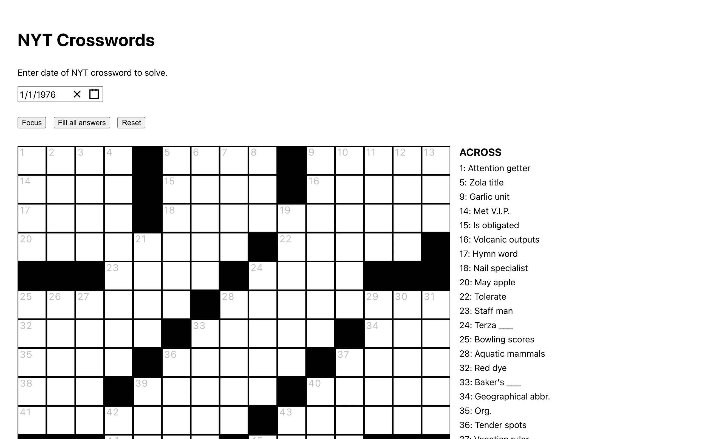

The New York Times crossword is behind a paywall and the official app is full of ads even for subscribers. I like doing old crosswords, the ones from the 70s and 80s where the clues reference things that no longer exist. There's a publicly available dataset of scraped NYT crossword data in JSON format covering puzzles from January 1976 through December 2017, with some gaps. I built a browser-based player that serves these puzzles through a clean interface with no ads and no account required.

{kind=link}
Data pipeline
The raw crossword data comes from a community repository that scraped the puzzles into JSON files. The format of that data didn't match what I needed for the frontend component, so I wrote a Python script to convert each puzzle into the structure expected by react-crossword, an open-source React component that handles the grid rendering, clue display, and input management. The converted data is hosted in a separate GitHub repository (nyt-crosswords-data) and fetched on demand when a user selects a date.
The conversion wasn't just a format change. The raw data has inconsistencies: missing clue numbers, clues that reference grid positions differently, puzzles where the grid dimensions are wrong. The script handles these edge cases and produces clean output or skips puzzles that can't be reliably converted. That's why there are gaps in the date range.
The player
A date picker at the top lets you jump to any date between January 1, 1976 and December 1, 2017. The grid renders below with across and down clues listed alongside it. You click a cell, type a letter, and the cursor advances. Clicking a clue highlights the corresponding cells in the grid.
When you complete a word correctly, the clue gets a green checkmark and a strikethrough. There's a "Reveal" button that fills in all answers if you get stuck, and a "Reset" button that clears the board. These are the only controls. No timer, no scoring, no streak tracking. I wanted something that felt like doing a crossword on paper, not a gamified experience trying to drive engagement metrics.

{kind=link}
Technical stack
The app is built with React and bundled with the standard Create React App toolchain. The production build goes into a /docs folder for GitHub Pages deployment. Yarn manages dependencies. The entire codebase is about 85% JavaScript, 12% HTML, and 3% CSS, with most of the heavy lifting done by the react-crossword component.
I considered building the crossword grid from scratch but react-crossword already handled keyboard navigation, cell highlighting, clue-to-grid synchronization, and answer validation. Writing all of that from zero would have taken weeks and the result would have been worse. The interesting part of this project was the data conversion, not the grid component.